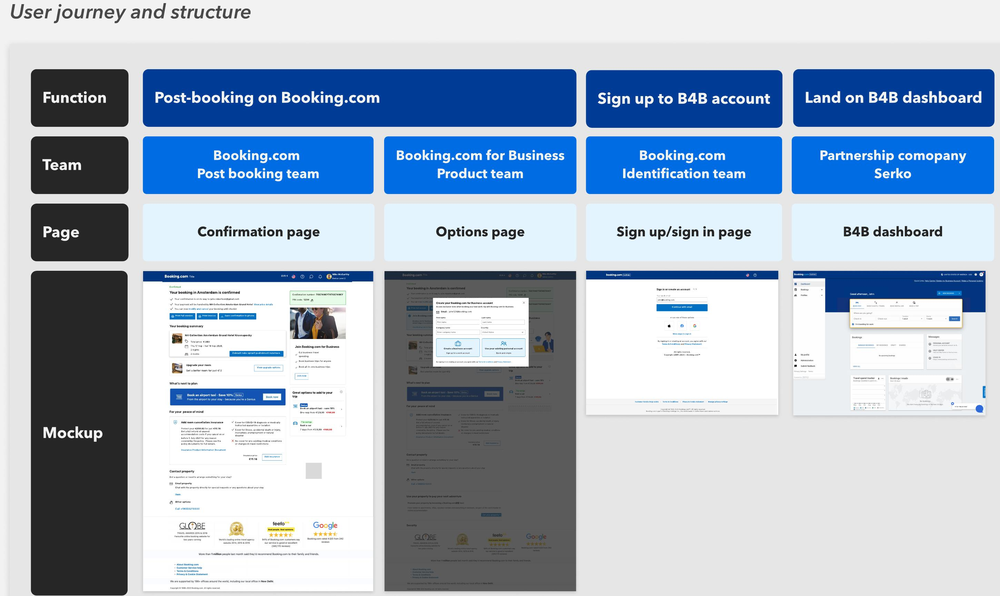
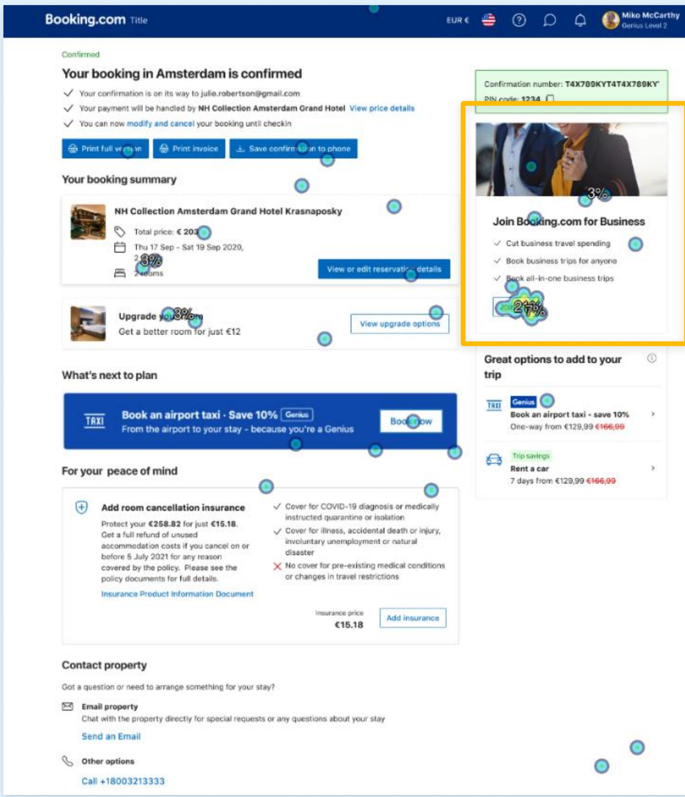
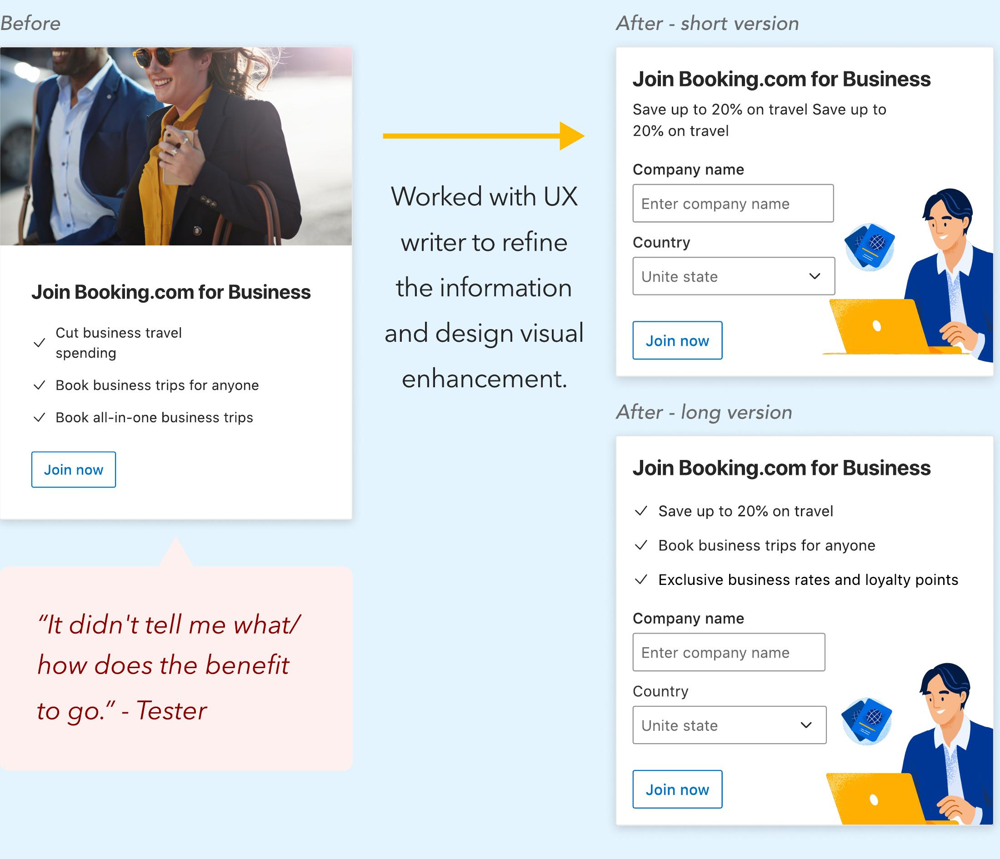

04 Test & Ship
Four Systems, One Journey
The "simple" entry card crossed four platforms — Booking.com post-booking, the identification system, the B4B product, and our partner Serko's stack. My first vision of one-click account migration died in feasibility review; I re-ideated the flow with B4B engineers until it was both user-friendly and technically real.

Validate, Then Refine
With the flow settled, I ran 8 unmoderated usability sessions plus first-click tests with 58 US users who had booked business trips in the past 6 months. Three insights drove the final design:
The placement worked — keep it
38% of users noticed the B4B promotion in its position — the most-focused element on the page. Decision: retain the position, push key content above the fold.
"It didn't tell me what the benefit is"
Users wanted concrete product benefits before committing. I paired with our UX writer on short and long variants that lead with value — savings, booking for anyone, all-in-one trips.
Account options confused people
"What's the advantage of joining with the same Booking.com account?" We rewrote the choice as two clear paths: create a business account, or continue with your existing personal one — quick and simple.


The Shipped Entry Point
The final design places "Join Booking.com for Business" directly on the confirmation page, with refined benefit-led copy and a clear two-path account choice behind it. In the live experiment, the winning variant moved the metric by +1.42% (±0.13) — clearing our ≥1% hypothesis with guardrails intact.